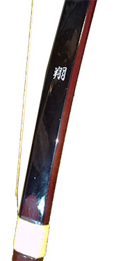
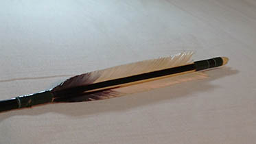
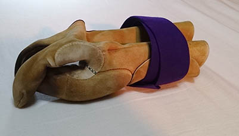
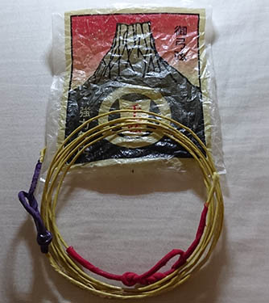
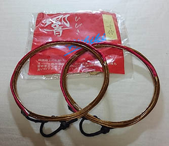
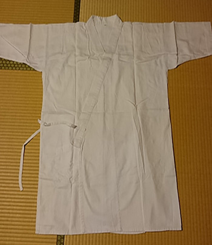
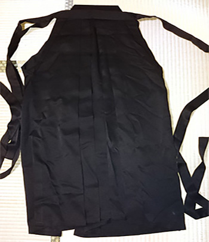
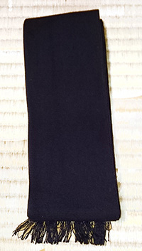
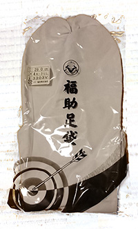

各種道具
道具を買う際は、必ず自分の先生に相談してください。訳が分からない状態で
道具を買うと痛い目を見ます。先生がいないという方は、とりあえず道場見学
をお勧めします。その時にきちんとした先生からアドバイスをもらってくださ
い。
写真は全て私物なので、いくつか汚れているものもありますがご容赦願います。
お店のサイトに行くときれいなものが見れるので、ここではどういった物なのかだ
け分かっていただければ幸いです。
壱.弓
これがないと始まりません。画像は私が所有している翔という弓です。
この他にも橘や楓、桂といった弓は比較的安価でとりあえず買ってみようという
人には良いかもしれません。
しかし、いきなり買うのではなくいくつか種類を
試してみて、自分に合う種類、重さを決めてから買ってください。

橘：http://www.sambu.jp/SHOP/A-009.html
楓：http://www.sambu.jp/SHOP/A-001.html
桂：http://www.sambu.jp/SHOP/A-007.html
上記のURLから山武弓具店の方に飛ぶことが出来ます。こちらの方が値段などが詳しく分かると思うので 是非見てみてください。
弐.矢
これも必須の道具ですね。矢の長さは人によって異なりますの
お店の人や先生と相談して適切な長さにしてください。
お店のサイトに行くと、矢のコーナーで1913や2015といった数字を目
にすると思います。これは製造年月日ではありません。
これは大まかにいうと、男性用女性用のことです。1913が女性、2015が男性です。

参.弓懸
弓道では、弓を持つのは左手で、弦を持つのは右手です。弓懸
は弓を引く際、弦から右手の親指を保護するための道具です。
弓懸は様々な種類の物がありますが、今回は初心者向けの解説
なので一番オーソドックスなものの画像にししてみました。
弓道をしていく中でもっと上達したいと考えた時に、弓や矢を替えるの
はよくあることですが、弓懸を別の種類の物にするのもいいかもしれません。

肆.弦
これが無いと矢は飛びません。いくつか種類はありますが、今 回紹介するのは比較的安価なも>のです。私自身は一本で2500 円ほどする弦を使っていた時がありました。
千本弦 |
 | 安い値段で買うことができます。そのかわり耐久力はあまりありません。 |
響 |
 | 千本弦の二倍ほどの値段ですが、その分耐久性は上がっています。また、矢が弦から 離れる瞬間の音、弦音(ツルネ)と言うのですが、それがとても綺麗です。 |
伍.胴着と袴
学生は学校毎に服装は異なると思いますが、きちんとした道場
で引く場合は必ず必要になります。

陸.帯
胴着を締めるのに必要なものです。太さが異なるものがあります。太いほど締め付ける範囲が広いため弓が引きやすいです。

漆.足袋
弓道をする時に履く靴下のようなものです。自分の靴と同じサイズのものを選びましょう。ただ、大きすぎて弛んでいると
格好悪いので大き過ぎるものは止めましょう。

まずはこれらを揃えれば良いと思います。もし何か必要になってくるのであれば師事している先生や先輩に聞くなどして、徐々に
道具に対する知識も増やしていきましょう。
また、下手に高い物は買わないようにしましょう。初心者の場合、矢に関しては変なところに飛び、折れてしまうこともあると思
うので最初は安いものにして、的に中るようになってきてから買い替えを考えたほうが良いと思います。
出典・脚注
URL使用
・『山武弓具店』http://www.sambu.jp (2015年11月アクセス)